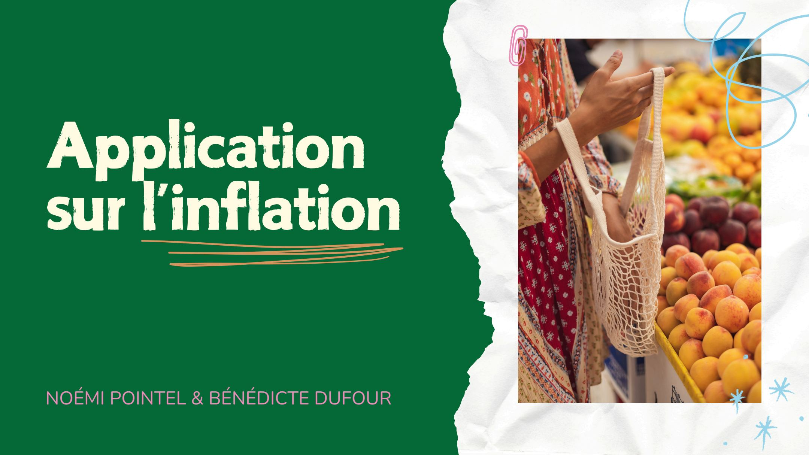
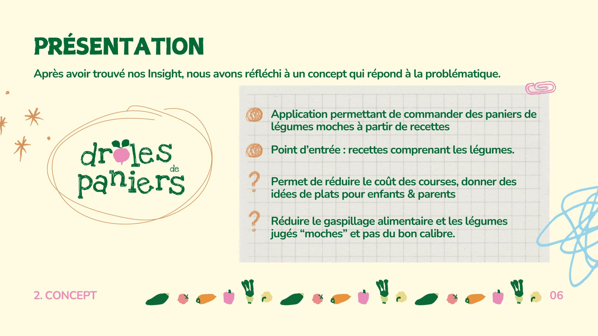
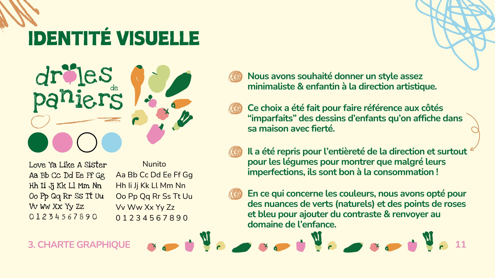
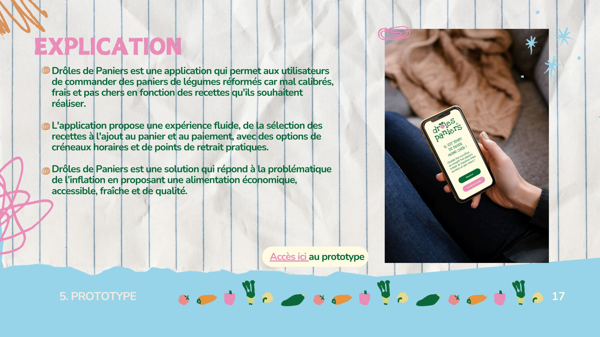
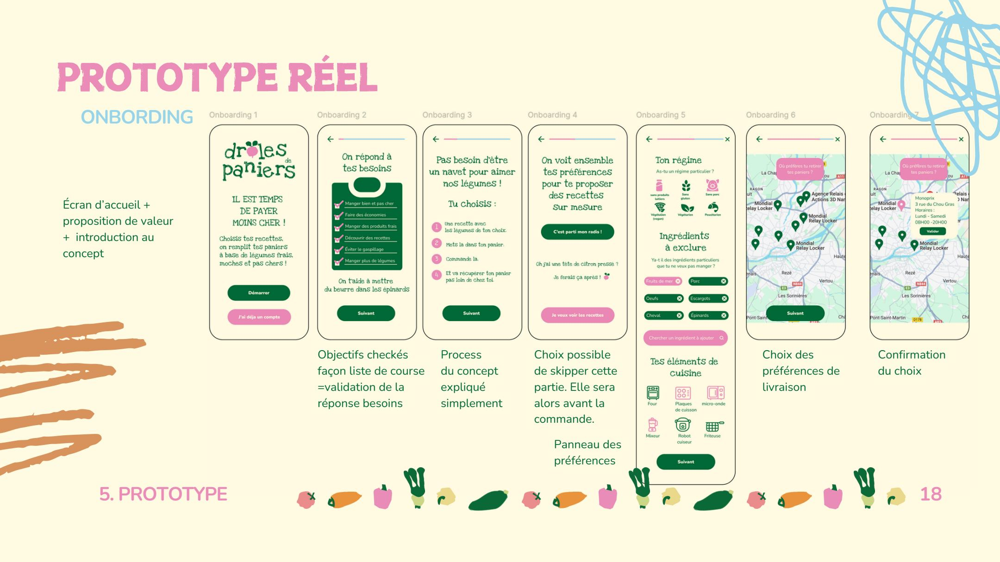
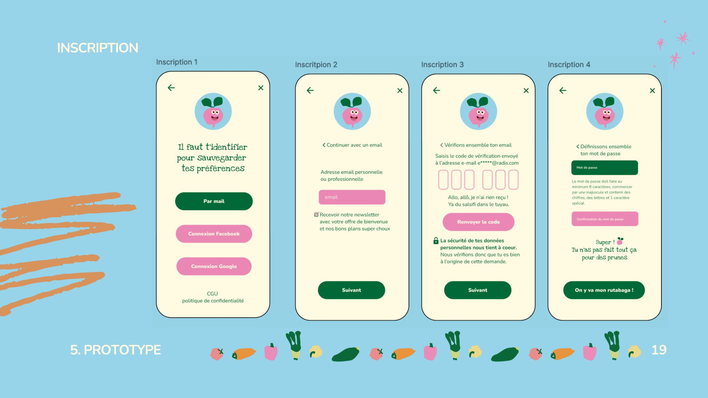
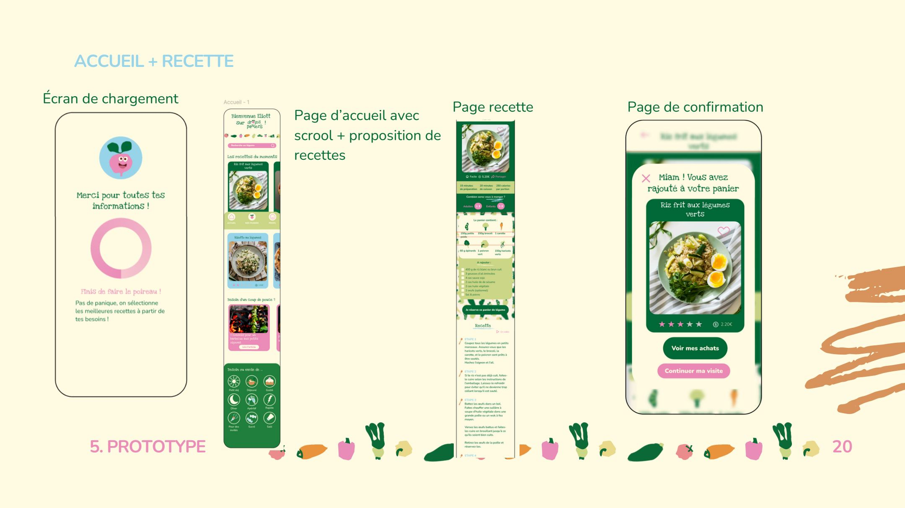
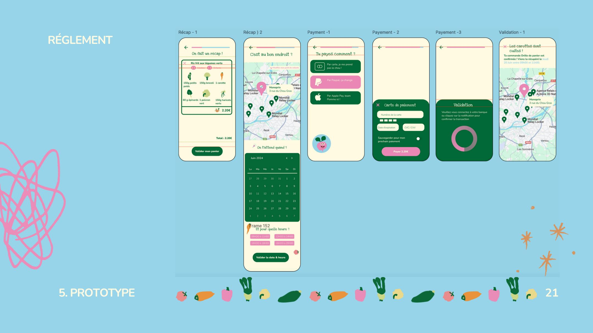

Application pour commander des paniers de légumes moches à partir de recettes. Un projet d'école autour de l'inflation alimentaire et de l'alimentation responsable · M2 Direction Artistique Digitale.
Tester le prototype ↗Présentation du projet

Cover de présentation · M2 DAD · Drôles de Paniers
Contexte · Brief
Brief : concevoir une application mobile en réponse à l'inflation. Notre angle : les légumes moches, ces fruits et légumes écartés de la grande distribution pour leur apparence, disponibles moins chers. L'app Drôles de Paniers permet de choisir une recette, de composer son panier autour, et de se faire livrer des légumes imparfaits mais parfaitement bons.
Démarche · 5 phases
01
UX Research
02
Concept
03
Charte graphique
04
Tests utilisateurs
05
Prototype
Valeurs de l'application
Économie
Des légumes moins chers grâce à leur aspect imparfait, pour manger bien sans se ruiner.
Ludique · Sympathique
Un univers graphique enfantin et bienveillant qui dédramatise l'alimentation imparfaite.
Simplicité
Interface minimaliste centrée sur la recette : on choisit ce qu'on veut manger, le panier se compose seul.
L'imparfait assumé
Valoriser l'aspect décalé des légumes comme un atout, pas un défaut.
Bien-être
Manger de saison, local, et réduire le gaspillage alimentaire à sa source.
Plaisir
La cuisine comme acte positif : des recettes accessibles, un panier tout prêt.
Concept · Exploration UX

Exploration UX · personas · insights · user flow
Personas · 3 profils cibles
Les retraités
Sensibles aux prix, attachés à la qualité des produits. À l'aise avec le temps de cuisiner, soucieux du gaspillage.
Les parents
Budget alimentaire sous pression avec une famille. En quête de praticité et de menus clé en main pour la semaine.
Les étudiants
Pouvoir d'achat limité, envie de bien manger sans sacrifier le goût. Sensibles à l'argument anti-gaspi.
Identité visuelle
Une palette de verts doux, rose et bleu pour évoquer la fraîcheur et la bienveillance. La typographie Nunito apporte une rondeur enfantine qui dédramatise l'alimentation imparfaite. Le style graphique joue sur le dessin d'enfant : simple, immédiat, chaleureux.

Charte graphique · Nunito · palette chromatique · style illustratif
Prototype · Vue d'ensemble

Vue d'ensemble du prototype · onboarding · recettes · panier · règlement
Écrans · Flux utilisateur complet

Onboarding · Inscription · Préférences

Accueil · Catalogue de recettes

Fiche recette · Composition du panier

Panier · Règlement · Confirmation
Tests utilisateurs · Itérations
Des tests utilisateurs ont permis d'identifier les points de friction et d'affiner le flux. Trois grandes itérations ont marqué l'évolution du prototype.
Contexte
Projet d'école · M2 Direction Artistique Digitale · brief sur l'inflation alimentaire · Figma
Équipe
Noémi Pointel & Bénédicte Dufour · UX Research, concept, charte graphique, wireframes, tests utilisateurs, prototype interactif
Compétences mobilisées
UX Research · Personas · User Flow · Wireframes · Design UI · Tests utilisateurs · Itérations · Prototype Figma
Explorer le prototype interactif
Naviguer dans le flux complet · onboarding, recettes, panier, règlement.
Dossier de projet complet disponible sur demande.